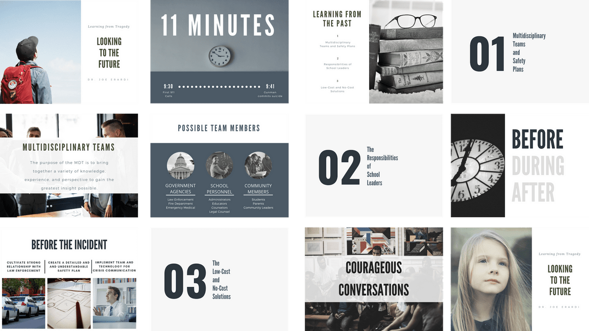
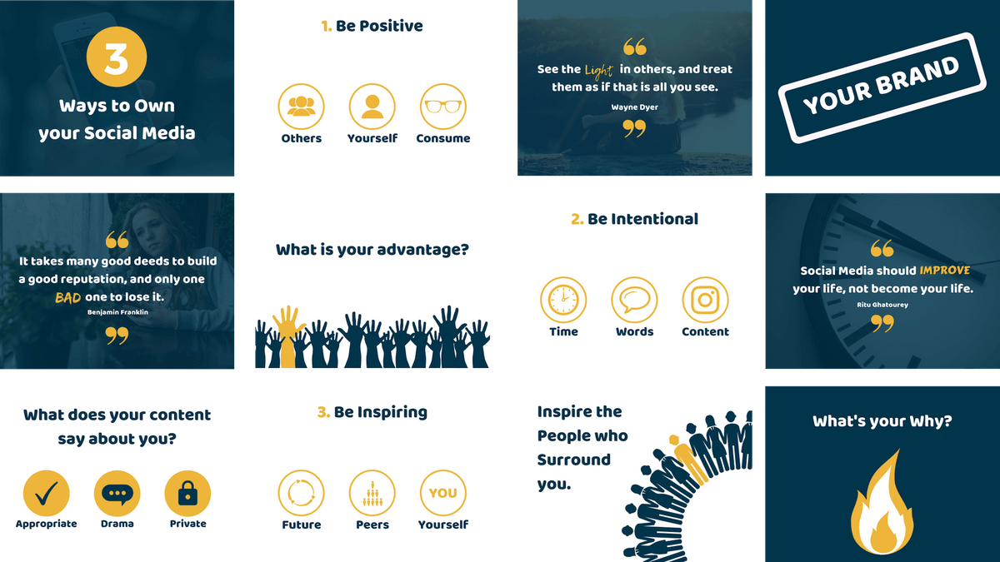

Years leading technical training and consulting
Meet
Dario Serafini
Enterprise Cybersecurity & AI | Academy Lead & Secure IT Architect
Mainframe-to-Cloud modernization, secure architecture, applied AI and enterprise-grade training delivery through DS Enterprise Training.
Summary
Security-first transformation for legacy, cloud and AI environments
Digital transformation requires more than technology adoption. It demands security, integration between legacy and cloud systems, and an architectural vision able to connect AI, modern infrastructure and regulated environments.
With more than 3,500 hours of training delivered in enterprise contexts, I work as Academy Lead and Secure IT Architect on complex programs spanning Cybersecurity, AI, Java enterprise development and application modernization.
My delivery framework is built around DS Enterprise Training: a quality-driven, security-first approach that combines technical depth, structured methodology, secure architecture principles and risk-aware design.
In Italy I collaborate through structured partnerships with accredited agencies and corporate academies. Partners retain full ownership of client relationships and governance; I contribute senior technical expertise, tested methodology and reliable delivery for high-complexity programs.
Training hours delivered in enterprise contexts
Core capability domains across the portfolio
Approach
“Complex technology becomes valuable only when it is secure, understandable and operationally usable.”
Security-first delivery, architecture-aware learning design and practical execution.
Experience
Enterprise delivery across academies, partner networks and mission-critical contexts
2011 — Present
Founder & Lead Trainer
DS Enterprise Training
Enterprise IT training for mission-critical modernization, from mainframe and COBOL environments to cloud and AI architectures. Delivery includes funded and corporate programs in banking, insurance and public sector contexts, with a structured QA approach that supports partner agencies in trainer assessment and risk reduction.
2024 — Present
Senior IT Trainer — Partner Agencies & Corporate Academies
Accredited Providers Across Italy
Senior instructional delivery across enterprise software development, databases, cybersecurity foundations, DevOps fundamentals, data analysis and applied AI, working with a broad partner network that includes ATI Formazione, Skills4U, Promimpresa, Generation Italy, Umana, SinerVis, Mentora, ForIT and other accredited organizations.
2024 — 2026
Recent Specialized Training Tracks
Cybersecurity, Spring Boot, Data Science, DevOps and Mainframe
Recent delivery highlights include Cybersecurity & Ethical Hacking programs, Java and Spring Boot academies, advanced Data Science and Machine Learning, PostgreSQL/MySQL/Redis/Cassandra labs with Ansible, React frontend tracks and mainframe academies covering COBOL, JCL, DB2, TSO/ISPF, Easytrieve and Endevor.
2011 — 2023
Software Architect / Senior Developer
Enterprise Environments
Long-term experience in software development and architecture across Java EE, Spring-based systems, distributed applications, database platforms and legacy enterprise environments. This foundation supports the architecture-aware and practice-driven approach used in current training programs.
Skills and Expertise
What I can architect, deliver and operationalize
Cybersecurity
Red Teaming, MITRE ATT&CK, Atomic Red Team, Caldera, ethical hacking, secure coding, traffic analysis, awareness and compliance-aware delivery.
AI, ML & Applied Data
Pandas, NumPy, Scikit-learn, PyTorch, TensorFlow, sentiment analysis, Hugging Face, prompt engineering and AI integration in regulated contexts.
Java Enterprise
Java SE/EE, Spring, Spring Boot, REST APIs, dependency injection, scalable enterprise architectures, clean code and backend delivery.
Cloud & Secure Architecture
AWS, Oracle Cloud Infrastructure, Docker, Linux environments, secure cloud architecture and modernization patterns for enterprise systems.
Mainframe-to-Cloud
COBOL, JCL, DB2, TSO/ISPF, Easytrieve, Endevor and training paths built for banking, insurance and large-scale z/OS environments.
Databases & DevOps
PostgreSQL, MySQL, Redis, Cassandra, relational and NoSQL paradigms, plus infrastructure automation with Ansible and vendor-neutral labs.
Certifications
Selected certifications and learning paths
Azure AI Engineer Associate
Applied AI engineering and cloud-based AI delivery
AWS Certified Developer — Associate
Cloud development foundations for enterprise environments
Spring Certified Professional 2024 [v2]
Enterprise Java and Spring ecosystem specialization
Google Cloud Fundamentals
Core infrastructure foundations in cloud environments
Introduction to Cybersecurity
Cybersecurity fundamentals and security awareness
Training Assets
Visual materials that support technical delivery

Cybersecurity & Awareness Decks
Structured visual assets designed to support clarity, retention and stakeholder alignment during technical and awareness-oriented delivery.

Academy Learning Visuals
Representative presentation materials used to strengthen academy delivery, executive readability and message-driven communication in training contexts.
Let's Chat
Available for partner academies, enterprise programs and specialist tracks
Location
Viterbo, Lazio, Italy
Languages
Italian (native) · English (B2)